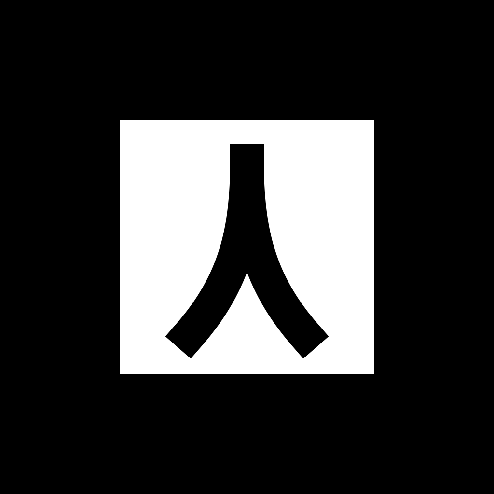

Prueba de target tracking
Esta versión usa la imagen de prueba como base del marker y coloca la escultura a 2 metros por detrás de la placa. La idea es simular que el público escanea una señal física y la pieza aparece al fondo.
Imagen base

Cómo probarlo
- Imprime o muestra en otra pantalla el marker generado.
- Ponlo de frente, como si fuese la placa.
- Abre la cámara AR y apunta al marker.
- La pieza debería aparecer 2 metros por detrás del plano del marker.
Generando marker desde la imagen…